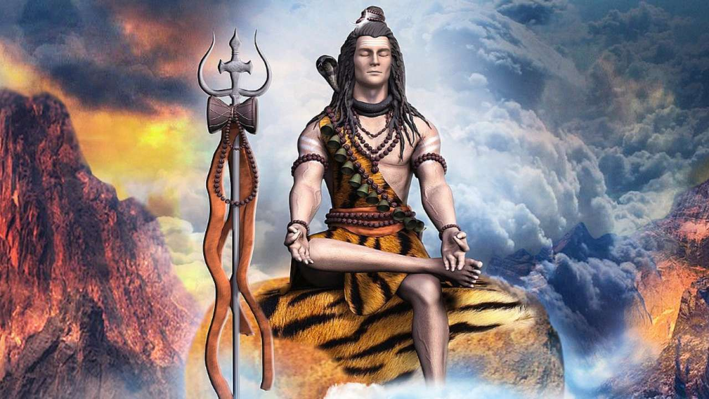
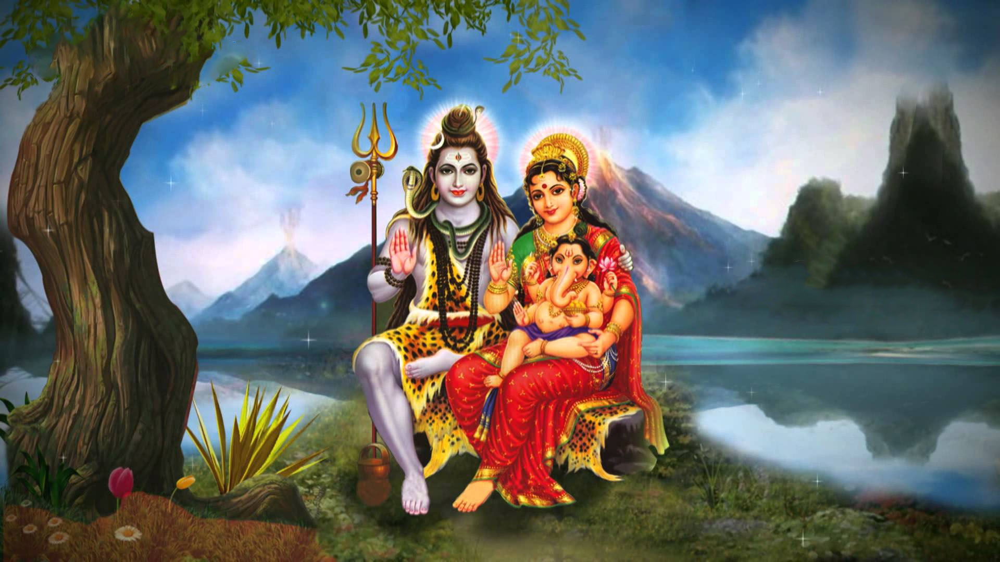
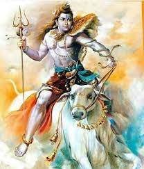
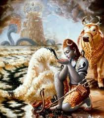
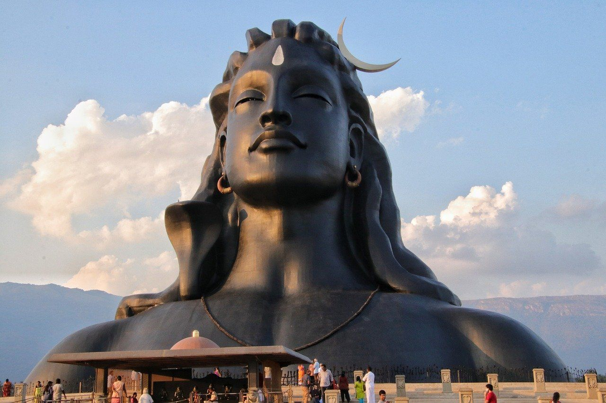
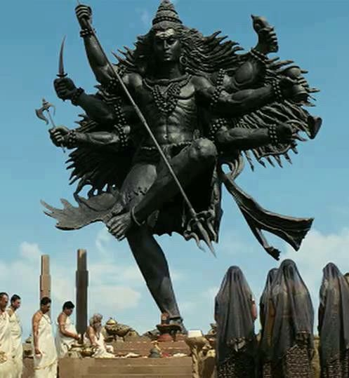
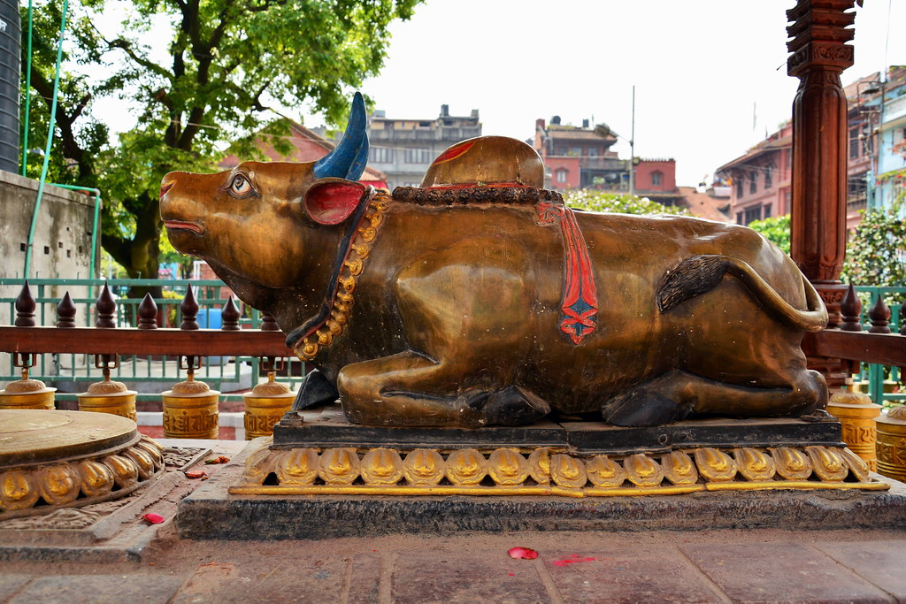

Shiva (Siva) is one of the most important gods in the Hindu pantheon and is considered a member of the holy trinity (trimurti) of Hinduism with Brahma and Vishnu. A complex character, he may represent goodness, benevolence and serve as the Protector. He is also associated with Time, and particularly as the destroyer and creator of all things.
Shiva
In Hinduism, the universe is thought to regenerate in cycles (every 2,160,000,000 years). Shiva destroys the universe at the end of each cycle which then allows for a new Creation. Shiva is also the great ascetic, abstaining from all forms of indulgence and pleasure, concentrating rather on meditation as a means to find perfect happiness. He also has a darker side as the leader of evil spirits, ghosts and as the master of thieves, villains and beggars. Shiva is the most important Hindu god for the Shaivism sect, the patron of Yogis and Brahmins, and also the protector of the Vedas, the sacred texts.
Shiva, Parvati & Ganesha

Shiva's wife was Parvati, often incarnated as Kali and Durga. She was in fact a reincarnation of Sati (or Dakshayani), the daughter of the god Daksha. Daksha did not approve of Sati's marriage to Shiva and even went further and held a special sacrificial ceremony to all the gods except Shiva. Outraged at this slight, Sati threw herself on the sacrificial fire. Shiva reacted to this tragedy by creating two demons (Virabhadra and Rudrakali) from his hair who wreaked havoc on the ceremony and beheaded Daksha. The other gods appealed to Shiva to end the violence and, complying, he brought Daksha back to life but with the head of a ram (or goat). Sati was eventually reincarnated as Parvati in her next life and she re-married Shiva.
With Parvati, Shiva had a son, the god Ganesha. The boy was in fact created out of earth and clay to keep her company and protect her while Shiva went on his meditative wanderings. However, Shiva returned one day and, finding the boy guarding the room where Parvati was bathing, he enquired who he was. Not believing the boy was his son, and thinking him an impudent beggar, Shiva called up the bhutaganas demons who fought the boy and eventually managed to distract him with the appearance of the beautiful Maya and, whilst he admired the beauty, they lopped off his head. At the commotion, Parvati rushed from her bath and screamed that her son had been killed. Realising his error, Shiva then sent for a new head with which to make the boy whole again but the nearest at hand was of an elephant. And so Ganesha, the elephant-headed god, was born. Other sons of Shiva are Skanda or Karttikeya, the god of war and Kuvera, the god of treasures.
Ganga (the goddess who personified the river Ganges) was given to Shiva by Vishnu who could not take any more of the constant quarrels between his then three wives of Lakshmi (goddess of good fortune), Saraswati (goddess of wisdom) and Ganga. To cushion Ganga's fall to the earth, and prevent such a great river destroying civilisation, Shiva caught her in his hair topknot; once again, illustrating his quality of self-sacrifice.
Shiva in Mythology


As with any major god, Shiva was involved in many adventurous episodes which illustrate his virtuous character and offer instruction on how to live correctly. For example, self-sacrifice is emphasised when Vasuki, the king of Serpents, threatened to vomit snake venom across the seas. Shiva, assuming the form of a giant tortoise or turtle, collected the venom in his palm and drank it. The poison burned his throat and left a permanent blue scar, hence one of his many titles became Nilakantha or Blue Throat.
Another celebrated episode describes how Shiva became associated with the bull Nandi. One day, Surabhi, who was the original mother of all the world's cows, began to give birth to an untold number of perfectly white cows. The milk from all these cows flooded the home of Shiva, somewhere in the Himalaya. Angry at this disturbance to his meditation, the god struck the cows with fire from his third eye. In consequence, patches of the cows' hides were turned brown. Still angry, the other gods sought to calm Shiva down by offering him a magnificent bull - Nandi, the son of Surabhi and Kasyapa - which Shiva accepted and rode. Nandi also became the protector of all animals.
Shiva is closely associated with the Linga (or Lingham) - a phallus or symbol of fertility or divine energy found in temples to the god. Following the death of Sarti, and before her reincarnation, Shiva was in mourning and went to the Daru forest to live with rishis or sages. However, the wives of the rishis soon began to take an interest in Shiva. In jealousy, the rishis first sent a large antelope and then a gigantic tiger against the god but Shiva swiftly dealt with them and wore the tiger skin thereafter. The sages then cursed Shiva's manhood which, in consequence, fell off. When the phallus struck the ground, earthquakes began and the ricsis became afraid and asked for forgiveness. This was given but Shiva told them to forever after worship the phallus as the symbolic Linga.
Shiva in Art



In Asian art Shiva may be represented in slightly different ways depending on the particular culture: Indian, Cambodian, Javanese etc. but he is most commonly depicted naked, with multiple arms and with his hair tied up in a topknot. He often has three horizontal stripes and a third vertical eye on his forehead. He wears a headdress with a crescent moon and a skull (representing the fifth head of Brahma, which he decapitated as punishment for the god lusting after his own daughter Sandhya), a necklace of heads, and snakes as bracelets. In this guise, he usually represents Nataraja and performs the Tandava cosmic dance within a circle of fire which represents the never-ending cycle of time. He holds the divine fire (agni) which destroys the universe and the drum (damaru) which makes the first sounds of the creation. One hand makes the calming abhayamudra gesture and another points to his left foot, symbol of salvation. He also stamps one foot on the dwarf figure Apasmara Purusha who represents illusion and who leads men away from the truth.
Shiva may also be depicted standing on one leg with the right leg folded in front of the left knee and holding a rosary in his right hand, the typical posture of ascetic meditation. Sometimes he also rides his white bull, carries a silver bow (Pinaka), holds an antelope, and wears a tiger or elephant skin, all symbolic of his famed prowess as a hunter.